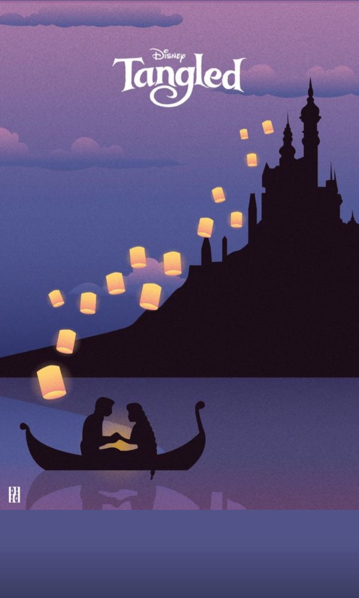
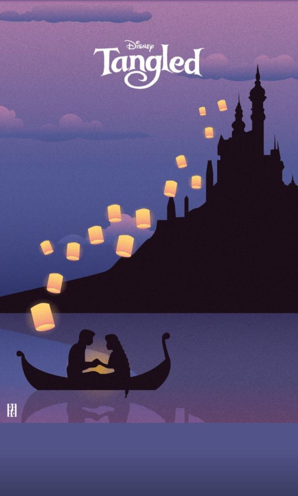
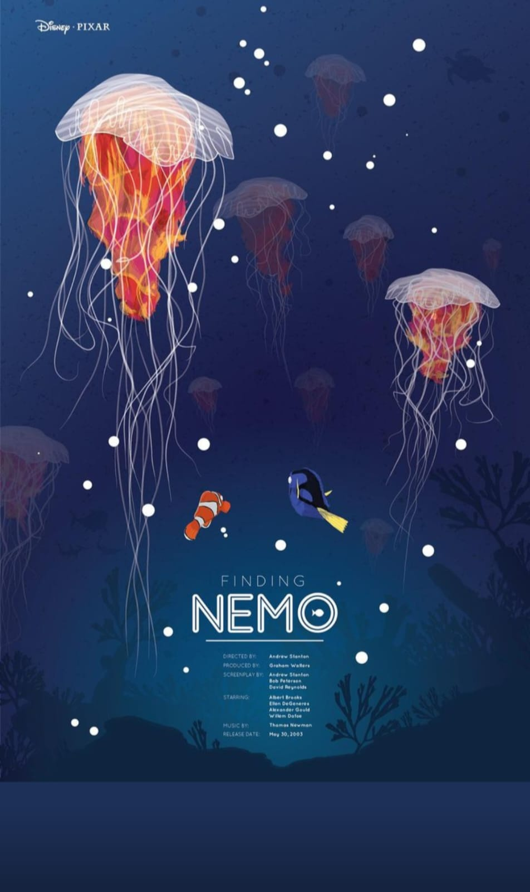

Inicio
Inicia en el mundo de la animacion la complegidad y
el buen desarollo de ideas y trasandolas en un
dibujo que se anima y cada ves toma vida
"La animación da vida a los sueños y color a la realidad".
"En la animación, cada cuadro es un latido del corazón creativo".
"Animar es como pintar con la luz del movimiento."
"En la animación, el tiempo se convierte en arte y el arte en tiempo".
"Un buen animador es un director de emociones en miniatura."
"Las imágenes cobran vida en la animación, bailan al ritmo de la imaginación."
"La animación es el lenguaje universal que trasciende las barreras culturales".
 

Información
veras la nimacion en diferentes manera ya sea
en 3D y 2D y stop motion que son de las ramas
mas complejas y con resultados maravillosos
"En cada trazo de animación hay una pizca de magia y una pincelada de paciencia."
"Animar es como componer una sinfonía visual de movimiento y forma".
"La animación es el arte de dar vida a lo inerte y alma a lo estático".
"El secreto de la animación reside en dar vida a lo que otros consideran estático".
"La animación es el puente entre la imaginación y la realidad visual".
"Cada fotograma de animación es una ventana al mundo de la creatividad."
"El animador es un arquitecto de la ilusión, construyendo mundos en el lienzo del tiempo."
"La animación es un baile de imágenes que cautiva a los ojos y abraza el corazón."
"En el universo de la animación, el movimiento es el hilo conductor de la narrativa".
"La animación se convierte en lo imposible en una danza plausible de colores y formas".
"El animador es un cuentacuentos visuales, tejiendo relatos con hilos de movimiento".
"En cada trazo animado se esconde la pasión de crear vida en la pantalla."
"La animación es el arte de jugar con el tiempo para crear emociones eternas".
